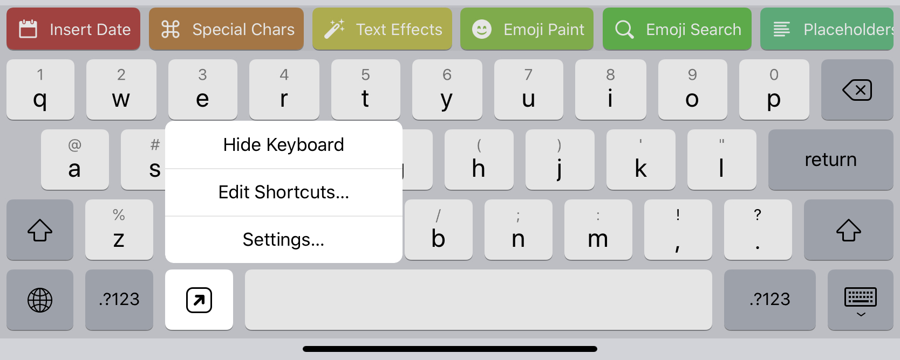

Navigation
- index
- modules |

- Python »
- 3.6.1 Documentation »
- |
This page gives you an overview of the various places where you can use Pythonista scripts to extend iOS, other apps, and Pythonista itself.
Most of these features are accessible by tapping the “wrench” button in the editor, and selecting “Shortcuts”.
The Pythonista keyboard is a custom on-screen keyboard that you can use in any app that has editable text. The keyboard includes a Python interpreter, so you can run scripts that manipulate text without ever launching the main Pythonista app. Scripts can insert text in the app, work with the selection, or even show completely custom user interfaces.
Please note that the Pythonista keyboard is not intended to replace the system keyboard for all your writing – it’s more like the Emoji keyboard, i.e. you’d typically switch to it briefly to run a script, and then switch back to the system keyboard (or any other custom keyboard) to do most of your typing. While the keyboard does include a standard QWERTY layout, there isn’t any kind of auto-correction or typing suggestions, so it’s not really suitable for long text input.
To give you an idea of what the keyboard is capable of, various scripts are included as examples.
How to Use
To start using the keyboard, tap and hold the “Globe” key on the system keyboard, and select “Keyboard Settings…”. From there, select “Keyboards > Add New Keyboard…”. You should find “Pythonista” in the list of available keyboard.
You may also want to enable the “Full Access” option after adding the keyboard, as some functionality won’t be available to your scripts otherwise (e.g. writing files that are readable by the main app or accessing the network). It’s generally possible to use the keyboard without full access enabled though.
After you’ve enabled the keyboard, you can switch to it anytime, using the “Globe” key. When you tap and hold the globe key, you can switch to any keyboard directly (without going through all of them by tapping).
In general, you can do most things you could do in a script that runs in the main app, but there are some limitations:
Tips:
keyboard module contains functions for dealing with text input and the keyboard in general. You can use this to insert text, move the cursor, get selected text, and more.More Information
Editor actions allow you to extend the popup that appears when you tap the “wrench” button, so you can run scripts while editing code or viewing other files.
Each editor action can have a custom icon/color, and you can create multiple actions from the same script by passing command-line arguments.
Editor actions are particularly useful for scripts that make use of the editor module (for scripting the text editor), but they can be anything that you want quick access to.
The “Reset Environment” option determines whether global variables etc. are deleted before the script is run. Normally, the runtime environment is reset before running a script, but if the editor action is related to debugging, it may be useful to keep the variables from the last script that was run.
More Information
This allows you to add a custom home screen icon to launch a Pythonista script. Technically, these home screen icons are just Safari bookmarks, but they do work offline.
On iOS 13 and later, you may want to use a home screen shortcut from the Shortcuts app instead. You can launch Pythonista from the Shortcuts app by opening a pythonista:// URL (see below).
The Pythonista URL generator allows you to easily generate pythonista3:// URLs for launching or opening your scripts from other apps. You can also generate QR codes with embedded URLs that can be scanned by the iOS camera app.
Pythonista’s URL scheme support allows various kinds of automation, including launching scripts from the Shortcuts app or third-party automation tools.
For more information on what you can do with Pythonista URLs, please refer to the Pythonista URL Scheme reference.
You can also generate Pythonista URLs programmatically, using the shortcuts module.
More Information
webbrowser moduleshortcuts module{kind=link}
{kind=link}
{kind=link}
{kind=link}
{kind=link}